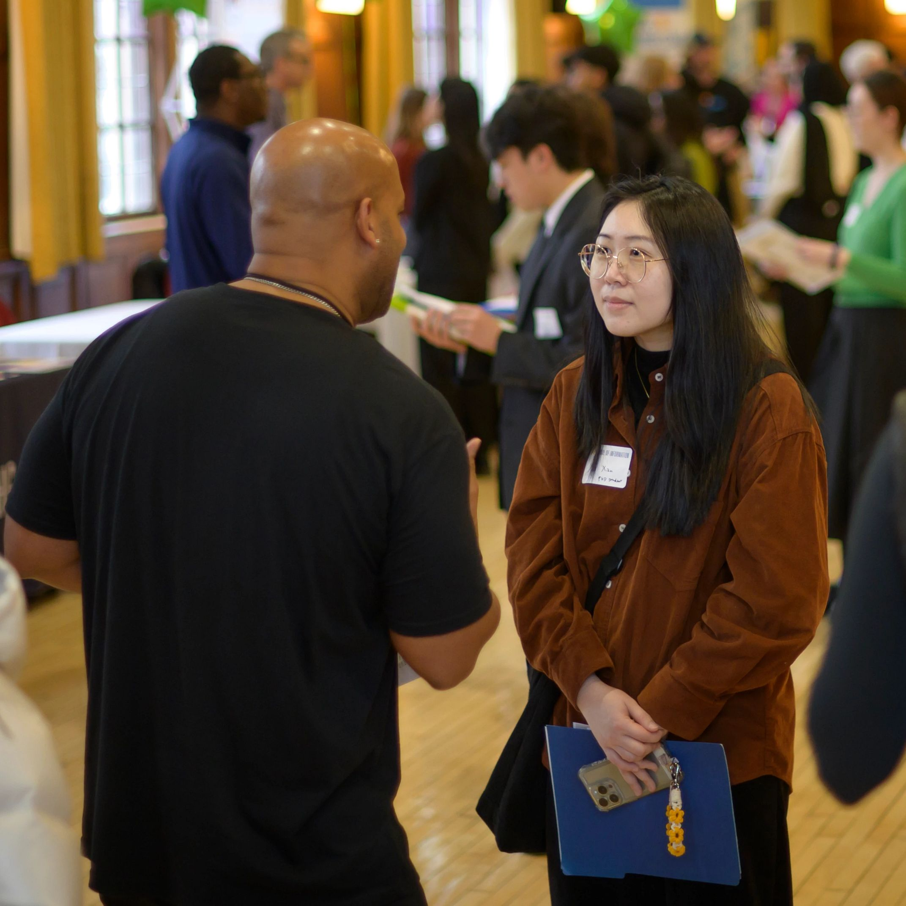
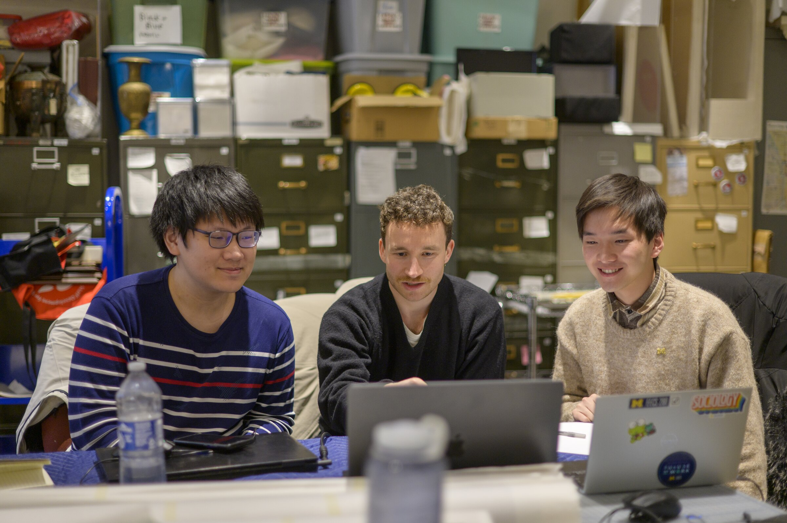

Building Your Partnership
A "partner" refers to any organization that collaborates with a UMSI student team in a real-world information project. ELO partners span various sizes and disciplines, from local grassroot nonprofits to the National Park Service.
First impressions shape the trajectory of a partnership. The starting phase is where abstract project ideas turn into structured, professional commitments. By establishing clear team contracts, co-creating agendas, and aligning on project scope early, you build psychological safety within your team and trust with your client. Learning how to navigate early ambiguity is one of the most valuable professional capabilities you will gain at UMSI.
Launch the Project
Once you've reflected on your position and scoped your project's context, it's time to formally launch your project and partnerships. This phase is about turning strong ideas into clear, documented commitments that everyone can rely on.

Reach Out to Your Partner
Your first message to a client or partner sets the tone for everything that follows. A clear, professional, and warm outreach email signals that your team is well-organized and respectful of the partner's time.
Before you write, consider what your partner needs to know:
- Who you are
- What your program involves
- What you are hoping to accomplish together
- How you'd like to move forward
Hold Your First Meeting
Kickoff meetings are a chance to establish a shared understanding of the project, clarify expectations, and build rapport. A well-structured agenda ensures that roles are defined and early misalignments are addressed.
Written Agreements
Discussing a formalized written agreement can be a good agenda item for your opening meetings. Written agreements protect both your team and your partner by clarifying committments and making sure everyone is working from the same set of expectations.
Questions to Consider at the Start of Your Experience
- How would I introduce my team and program to a partner who may be unfamiliar with UMSI?
- What does my partner need to know before our first meeting?
- What questions do I still need answered to finalize our project scope?
- What should we do if our understanding of the project changes in the future?

In Summary...
- Draft your outreach: Write a clear, professional email introducing your team and proposing a first meeting.
- Prepare your agenda: Build a kickoff meeting agenda that covers introductions, goals, roles, and logistics.
- Hold your first meeting: Facilitate the conversation, take notes, and confirm shared understanding of the project.
- Document your agreements: Record team commitments and partnership terms in writing.
- Confirm next steps: Make sure both your team and your partner know what happens next and when.
Resources for Early Engaged Learning